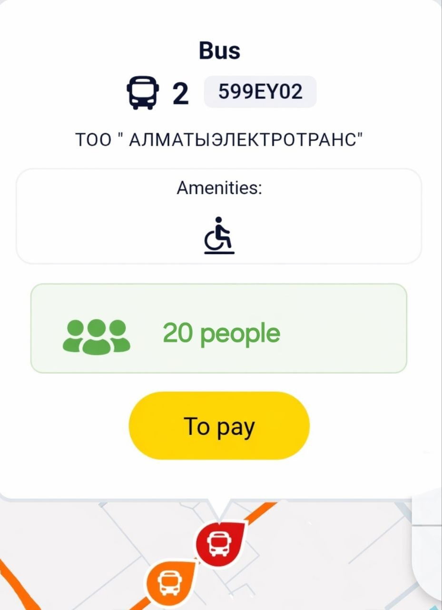

JolaushyMap
01 · Кіріспе
JolaushyMap
Қазіргі уақытта қоғамдық көлікте адамдар санының көптігі үлкен мәселе болып отыр. Әсіресе қарбалас уақытта автобустар толып кетеді, бұл жолаушыларға қолайсыздық тудырады. Сондықтан адамдарға автобус ішіндегі жағдайды алдын ала білу өте маңызды.
02 · Мақсат
Жобаның мақсаты
Бұл жобаның негізгі мақсаты – қоғамдық көліктегі адамдар тығыздығын нақты уақыт режимінде көрсету. Пайдаланушылар қай автобустың бос немесе толы екенін көріп, өзіне ыңғайлы маршрутты таңдай алады.
03 · Шешім
Шешім
Шешім ретінде арнайы карта негізіндегі қосымша ұсынылады. Онда әр автобус немесе маршрут түрлі түстермен белгіленеді. Бұл ақпарат пайдаланушыға тез шешім қабылдауға көмектеседі.

04 · Жұмыс істеуі
Жүйенің жұмыс істеуі
Жүйе екі негізгі дерек көзі арқылы жұмыс істейді:
💳 Төлем карталары
Автобусқа кірген адамдардың саны төлем арқылы есептеледі.
📡 Есік сенсорлары
Барлық адамдар карта қолданбайтындықтан, есіктердің үстіне орнатылған сенсорлар кіріп-шығатын адамдарды санайды.
Осы екі дерек біріктіріліп, нақты адамдар саны анықталады.
05 · Технологиялар
Автоматты жолаушы санау (APC)
Инфрақызыл сенсорлар арқылы жұмыс істейтін жүйе автобус есіктерінің үстіне орнатылады.
- Әр адам автобусқа кіргенде немесе шыққанда, сенсор арқылы өтеді
- Сенсорлар қозғалысты анықтап, адамның қай бағытта қозғалғанын ажыратады
- Жүйе жолаушылар санын автоматты түрде қосады немесе азайтады
| Оқиға |
Өзгеріс |
Жолаушылар саны |
| 3 адам кірді |
+3 |
3 |
| 2 адам шықты |
−2 |
1 |
| Қазіргі жолаушылар |
— |
= 1 |

06 · Артықшылықтары
Артықшылықтары
- Жолаушылар уақытын үнемдейді
- Қолайлы және бос автобусты таңдауға мүмкіндік береді
- Қоғамдық көліктің тиімділігін арттырады
- Қарбаласты азайтуға көмектеседі
08 · Қорытынды
Қорытынды
JolaushyMap – қоғамдық көлік тығыздығын нақты уақытта бақылаңыз.